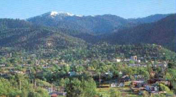

ASHLAND

Things we like to do in and around Ashland:
Around Ashland
We love our local Lakes for the scenery, the fishing (Emigrant or Lost Creek), the boating and the camping. Our favorite lakes are Lake of the Woods, Lost Creek Lake and Crater Lake. We love rafting down the Rogue River, going to the coast and hiking through the forests and up Mt. McLoughlin. We also love the many nature parks to observe wildlife. The children love to play in the fountains at the water-park (Garfield Park). There is also a great bike path in Ashland that runs right along the creek for the kids. We love Mt. Ashland in the winter for skiing and in the summer because we can drive our car to the top for fantastic views--but the bugs try to eat us alive. Lithia Park is one of our favorite places. We go there several times a week to walk and enjoy everything. Its beautiful landscaping was done by John McLaren--the same landscape architect and designer of The Golden Gate Park in San Francisco. We love to have picnics and watch Ballet in the Park or the summer concert series. Our Shakespearean Theater is one of the best in the world and people come from all around the globe to see the plays. The Green Shows, in the Elizabethan courtyard, are fun to watch in the summer. The University is nice for concerts and plays as well. Ashland's main street is very cute. The shops spend a lot of time and effort dressing their windows--especially for Christmas. The many parades, festivals and celebrations in Ashland all year round are really great. We just got a big science museum like the one in Portland.
Our Favorite Summer Spots
I have to say that I haven't found anywhere in the US I’ve been that I like better than Ashland. The weather is just right (with our mild seasons) and we have mountains, lakes, deserts, rivers and the coast close by. At the coast we’ve found a cove, called Sunset Bay, that’s sheltered from the wind so it’s warm like the California beaches. But the cove is more beautiful than anything we’ve seen in California. From the cove you can look out at the ocean spray shooting from the huge rocks and drink in the fantastic beauty. You can also climb up the soft bark cliff trails to a beautiful overlook. You can rope down the cliffs to white sand coves with tide pools everywhere. There’s plenty of room to spread out and enjoy the rainforest look by the winding river that slowly runs into Sunset Bay. We build a beach fire and cook meat and potatoes over it. Eating over a wood burning fire at the beach makes food taste extra good, with the fresh salt air and sunshine. You can park for free right by the cove and are within easy walking distance of everything. There’s a reserve group camping area is on the big grassy area on top of the cliffs. It is surrounded with natural bushes and evergreen trees with paths leading to the rainforest or trails that run along the cliffs with views of huge rocks, coves and the ocean. It is heaven.
A little down Hwy 101 on the cliffs overlooking the sea is Shore Acres. This place is even more spectacular, designed like a beautiful English Garden by the sea. This place has to be the most beautiful place on earth with the garden, the big pond and the forest framing the gardens and the cottage. If you go through the gate near the pond there is a winding sandy trail down to a sheltered cove on the beach. Seals and other wildlife are on view. It is worth going just for the peaceful feeling you get being there.
We’re also not too far from The Redwood Forest. My family moved here from New Mexico in 1948 but it wasn’t until just last year that we found the best place to see the Redwoods. The biggest Redwoods on earth are in this place. There is free parking and a couple of miles of groomed trails through the Redwoods. It would be hard to find a better place to have a family picture with the huge ferns all around, the giant Redwoods towering overhead, light filtering through the branches in big streams and natural wooden benches all along the walking trails. The crystal clear, blue-green Smith River with lots of pretty rocks lining its edges runs through the forest. You will get a strong spiritual feeling in the Redwoods.
This is how and where we relax in the summer, along with Crater Lake, which is a wonder to behold. It’s great for hiking, biking and walking. You can drive right to the top of Crater Lake, just like Mt. Ashland. They both have amazing views, but at Mt. Ashland you have to watch out for big, nasty flies that dive bomb you till you give up and say, ‘you win, I’m out of here’.
Come visit and stay with us as you enjoy the nature in our area.
Eating out in Ashland:
We love Azteca and Mi Casa for Mexican, The Golden Dynasty and Jade Dragon for Chinese and Mongolian BBQ.
Links to Ashland:

Wikipedia
Ashland
Welcome to Ashland
Chamber of Commerce
Ashland Guide